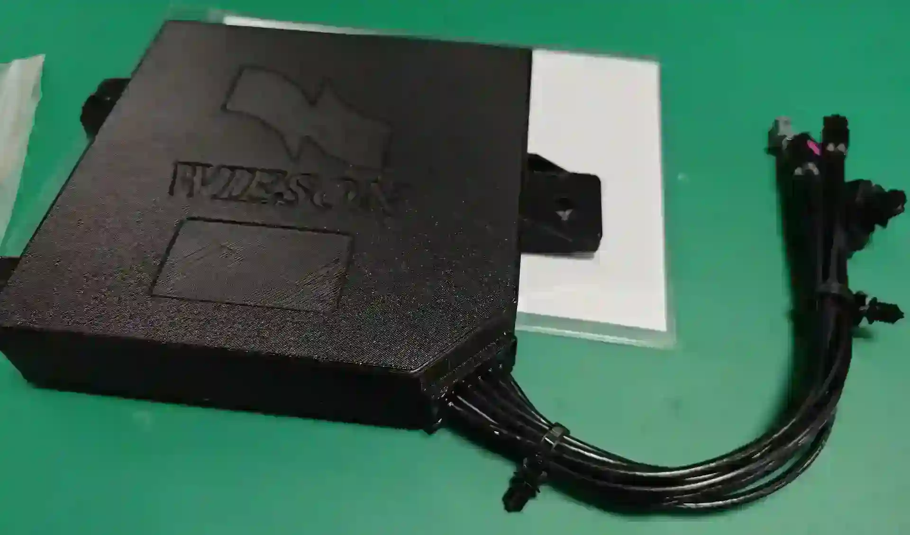
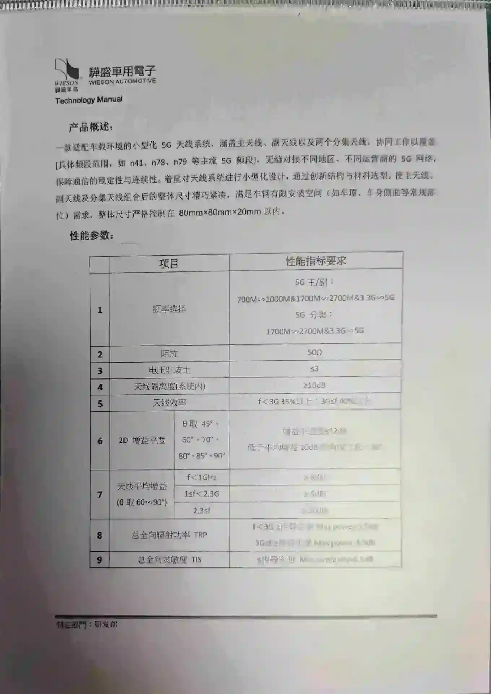
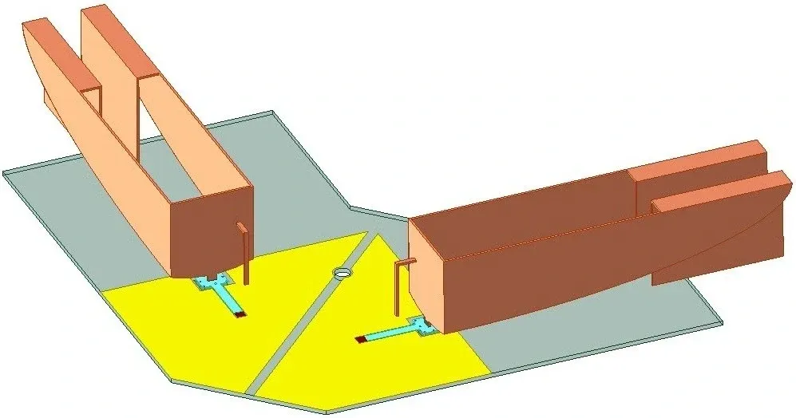
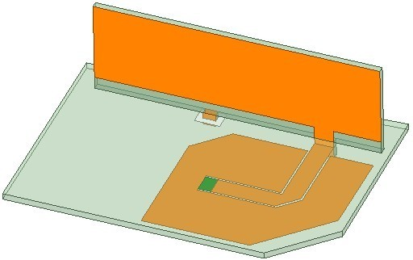
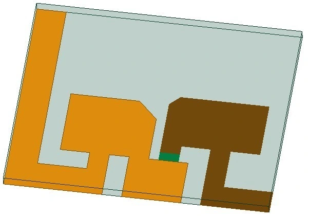
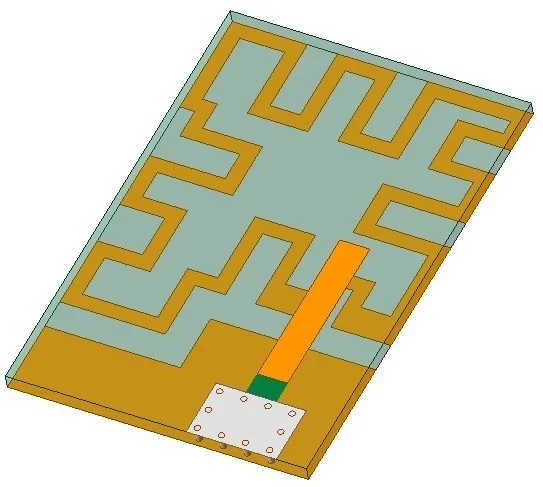
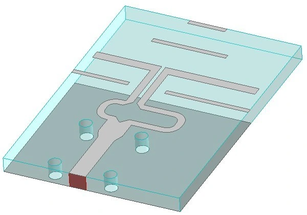

集成定位与通信多通道车载天线盒
将 5G / Wi-Fi 6E / BT / V2X / GNSS 五类天线集成于 120 × 80 × 25 mm 盒体，在 700 MHz – 6 GHz 内通过宽带多频段、圆极化与高隔离 设计，实现 2 – 8 dBi 增益与天线间 > 20 dB 隔离。
项目概述/ Overview
集成的主要代价是天线间互耦。
企业横向课题。设计并交付集成定位与通信功能的多通道车载天线盒，单盒集成 5G、Wi-Fi 6E、BT、V2X、GNSS 多类型天线，提出宽带 5G 车载天线与高增益 V2X 天线方案，融合圆极化、宽带多频段、高隔离等技术，完成设计、仿真、加工与实测全流程。
整车端不希望为每类业务单独布置车顶天线；单盒集成可降低装配复杂度， 并保留车顶型面与后装可行性，定位与通信通道因此必须共口径。
五类系统、六项功能（蜂窝含 4G 与 5G）集成于 120 × 80 mm 口径， 天线间近场耦合显著： 低频段间距受限，Wi-Fi 6E 与 V2X 频域相邻。 指标按盒级口径整体定义，本页数字均为盒级。
方案因此走两条主线：把蜂窝通道合并为宽带结构以省出辐射体数量， 把增益最敏感的 V2X 单独拆出做高增益；其余隔离额度由极化与布局组合补齐。
技术规格/ Specifications
左列是盒级电气口径，右列是集成与工程约束。
- 集成通道
- GNSS / 4G / 5G / Wi-Fi 6E / BT / V2X五类系统六项功能
- 工作频段
- 700 MHz – 6 GHz定位与通信合并口径
- 天线增益
- 2 – 8 dBi
- 天线间隔离
- > 20 dB
- 辐射效率
- > 40%各通道
- 极化方式
- RHCP + 线极化
- 外形尺寸
- 120 × 80 × 25 mm
- 关键技术
- 宽带多频段 · 高隔离 · 圆极化
- 研制范围
- 设计 · 仿真 · 加工 · 实测
- 合作形式
- 企业横向课题
- 成果转化
- CN202510483710.2发明专利
- 下游迭代
- P-03 板端接口款式
技术方案/ Approach
以下条目说明各方案的取舍依据。
- 蜂窝通道合并成一副宽带辐射体，而不是按频段分副 —— 盒内要为 Wi-Fi、BT、V2X、GNSS 各留出位置，口径不可能按频段逐个开振子。 把蜂窝低频段一路拉到 6 GHz 收进同一宽带结构、阻抗匹配按宽带做， 本质是用最少的辐射体数量换最大的剩余间距，省下的空间全部让给隔离。
- V2X 从合并方案里拆出来，单独做高增益 —— V2X 为车对车、车对路侧直达链路，功率与时延余量小，且与 Wi-Fi 6E 频域相邻；共用宽带体无法满足其增益要求， 故单独采用高增益 V2X 方案。
- 圆极化只用在定位通道 —— GNSS 来向不定，信号经车身与地面反射后极化状态劣化，线极化会损失链路余量， 定位通道因此采用圆极化（RHCP）；RHCP 与周围线极化 通信振子近似正交，客观上降低了部分互耦。
- 700 MHz 自由空间半波长接近 210 mm，超过盒体最长边，最低频段无空间隔离可用； 天线间 > 20 dB 由频段划分、极化正交、方向图错开 与辐射体位置组合实现。
- 紧凑封装必须与结构件共存 —— 辐射体压在盒内、贴近壳体与支架，介质与金属件的加载会把仿真谐振点拉偏， 匹配需在装配状态下迭代确定。车规环境适应性优化覆盖 温湿、振动与洗车工况，指标不回退。
- 设计、仿真、加工、实测由同一人闭环： 实物在微波暗室以矢量网络分析仪回测端口 S 参数、通道间隔离与方向图增益， 偏差直接回溯到模型修正。
项目图档/ Figures
图档按子系统分列；点击放大，方向键翻页。







FIG 01
项目成果/ Outcomes
多通道指标须同时满足，验收按全部指标联合判定。
GNSS / 4G / 5G / Wi-Fi 6E / BT / V2X 集成于一盒，取代多副独立天线。
在低频段无空间隔离可用的口径内，由极化与布局组合取得。
各通道优于 40%，增益覆盖 2 – 8 dBi，频率跨度 700 MHz – 6 GHz。
设计、仿真、加工、实测全流程自持，指标偏差可回溯到模型。
「一种车载集成式天线盒」CN202510483710.2。
盒级指标达成后，方案进入企业产品路径并应用于车载系统； 其集成结构以发明专利「一种车载集成式天线盒」（CN202510483710.2）固化。 同一产品线的工程问题（安装接口与内部通道布局）继续在 P-03 板端接口式车载天线盒 上推进。
关联：研究方向 D-02 · 天线设计 · 论文与专利 · 工作经历